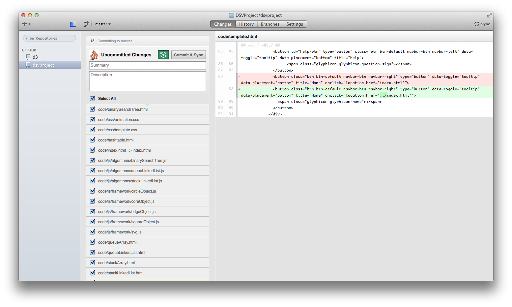
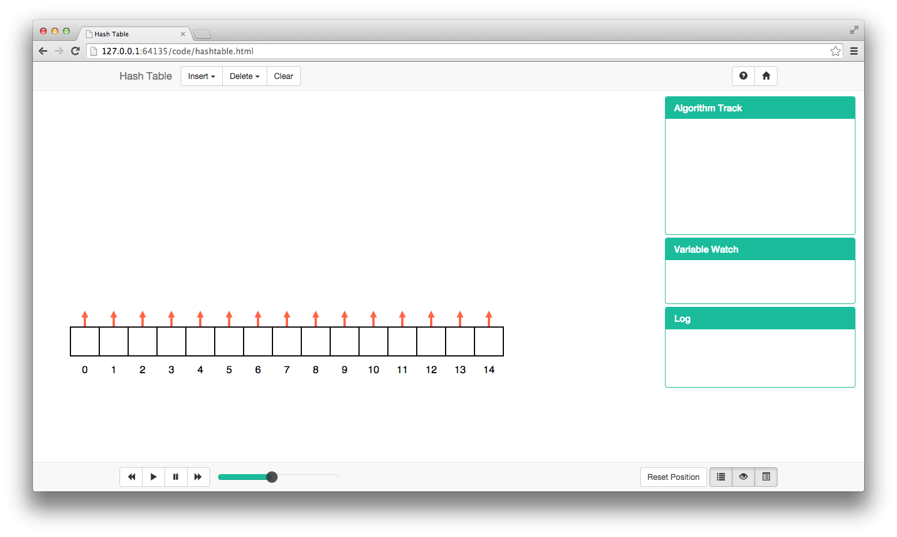

Getting started with DSVProject
Overview of the framework, its contents, and how to get started with it.
1. The Framework
This framework serves as a base to implement Data Structure Visualisations, providing tools to create graphic items, animate and manage them. It was built in a way that anyone with some knowledge of Object Oriented Programming and JavaScript can use it, without having knowledge about SVG or D3.js.
In this user guide we'll begin by studying each class and then we will proceed to learn how to use them to create a visualisation.
The classes provided were designed to control the graphic part of the visualisation, and should be integrated with the algorithms of each data structure.
1.1. Cloning the repository
In this project we decided to use GitHub for source code control, which means that if you want to contribute you should be familiar with it. If you're not we recommend this tutorial. It goes straight to the point without any complications.
If you're already familiar with git, all you have to do is checkout the project repository by running the terminal command:
git clone https://github.com/DSVProject/dsvproject.git
If you're not confortable with terminal, github offers clients for all Operating Systems.
1.2. File Structure
You've cloned the project to your computer and now what? Let's understand how the framework directories are organised:
DSVProject/ ├── code/ │ ├── bootstrap/ │ ├── d3/ │ ├── js/ │ │ ├── util.js │ │ ├── third-party/ │ │ ├── algorithms/ │ │ │ ├── template.js │ │ │ └── visualisation JS files │ │ ├── framework/ │ │ │ ├── coreObject.js │ │ │ ├── squareObject.js │ │ │ ├── circleObject.js │ │ │ ├── edgeObject.js │ │ │ ├── userObject.js │ │ │ ├── svg.js │ │ │ └── constant.js │ │ └── custom/ │ │ └── Custom shapes and sets of shapes JS files │ ├── css/ │ │ ├── animation.css │ │ ├── template.css │ │ └── Other CSS files │ ├── template.html │ └── Visualisatons HTML files ├── documentation/ │ ├── userGuide/ │ │ ├── css/ │ │ ├── js/ │ │ ├── img/ │ │ └── userGuide.html │ └── .doc files ├── index.html └── readme
Although it might look complex there are only 3 folders that you should worry about:
- code/ : where you'll place your visualisation .html file.
- algorithms/ : where you'll place your visualisation .js file.
- custom/ : where you'll place your custom shape or set of shapes, in case you decided to create one.
The .css file that controls the styling of the shapes if called animation.css.
The main website and the visualisation pages were built using Boostrap. The .css file that control the styling of the pages is called template.css, and the javascript functions related to the page behaviour are located inside util.js.
2. Architecture
The files used to develop a visualisation can be divided mainly into 2 layers: data and graphics. First let's take a look at the big picture:
Now let's understand what's going on in there. On top of everything we have the .html file which is going to be the page of our data structure visualisation. This file will interact with our data layer, that contains the algorithms of this data structure, in a javascript file. With the algorithms ready it's time to make them turn into graphics, what brings us to the next layer.
In your data structure javascript file you're going to need an instance of CoreObject.js, which is the main class of the graphic layer. It is responsible for the management and control of all graphical classes and animations. When creating a circle, or square, you'll do this through the core, that will store this object for you, but all the details of this are going to be clarified in the next sections of this guide.
3. Basic Items
All visualisations will be built using instances of these items. For example, an array will be a combination of Squares positioned side by side, while a node will be a combination of a Square with an Edge. For this reason let's take a look on each of them to understand how they're meant to be used.
3.1. Square Object
The square is one of the basic shapes and here's how it will look on the screen:

As you noticed by the annotations on the image this object is composed of 3 elements: a shape, an inner text and a label (the last two being optional) but we'll get into this a little ahead.
3.1.1. Constructor and Parameters
The class is called SquareObject, and to create an instance of a class in javascript all you have to do is the same that you would do in any other OO language:
var newObj = new SquareObject(coreObj, id, x, y, text, label, shapeClass, textClass, labelClass);
Now let's understand all those parameters:
- coreObj: this parameter is the reference to the instance of CoreObject; as you will see later on, CoreObject is responsible to keep track of all existing objects. With this reference, this object will be able to interact with the others if needed (for example in the Learning Mode).
- id: an unique text, to be used as a "key" for this instance.
- x: the x coordinate of this object inside the svg container.
- y: the y coordinate of this object inside the svg container.
- text: the inner text of this object (b. on the image above).
- label: the label of this object (c. on the image above).
- shapeClass: the CSS class of the shape SVG element.
- textClass: the CSS class of the text SVG element.
- labelClass: the CSS class of the text SVG element.
As you will be able to notice in the javadoc, some of this parameters are not obligatory (like text, label, classes), making it easy to customise a shape. Regarding the classes, it is always recommended to send "null" as parameter since all instances will inherit a default class, unless you would like it to have a different look.
Now let's take a look of a few examples:

Square 01 is an instance of a SquareObject without a label, while Square 02 has one. All the other Squares have an EdgeObject associated with them, where each instance was created with a different "outgoingPoint" parameter, which means that when the pointer is null (in here indicated by the color red) it will point into a different direction. When leaving from the bottom, if the SquareObject has a label, the Edge will take this into consideration (as seen in Square 08).
3.1.2. Fields
These fields will store all the important data regarding this instance.
3.1.2.1. Core
this.coreObj = coreObj;
Store the reference to coreObj parameter.
3.1.2.2. Offset Values
this.textAdjustX = defaultProperties.shape.width / 2; this.textAdjustY = defaultProperties.shape.height / 1.75; this.labelAdjustY = defaultProperties.shape.height + 30;
When drawing the properties onto the screen, the inner text and the label may need some positioning adjustments, which will be stored in these.
3.1.2.3. Property Map
this.propObj = {
"id": id,
"shape": {
"class": shapeClass,
"x": x,
"y": y,
"width": defaultProperties.shape.width,
"height": defaultProperties.shape.height,
"fill": defaultProperties.shape.fill.default,
"fillOpacity": defaultProperties.shape["fill-opacity"].default,
"stroke": defaultProperties.shape.stroke.default,
"strokeWidth": defaultProperties.shape["stroke-width"].default
},
"text": {
"class": textClass,
"x": x + this.textAdjustX,
"y": y + this.textAdjustY,
"fill": defaultProperties.text.stroke.default,
"fontFamily": defaultProperties.text["font-family"],
"fontWeight": defaultProperties.text["font-weight"],
"fontSize": defaultProperties.text["font-size"],
"textAnchor": defaultProperties.text["text-anchor"],
"text": text
},
"label": {
"class": labelClass,
"x": x + this.textAdjustX,
"y": y + this.labelAdjustY,
"text": label
},
"toRemove": false,
"isValidTarget": false
}
This is the most important field of this object. It is a property map that will store all the data regarding the shape, the text, the label and other variables used for functionality. When drawing this object on the screen these values will be taken into consideration.
But as you might have noticed there's two properties in there that doesn't seem quite like "graphical", and you're right. Each one is a boolean flag to control an specific behaviour:
- toRemove: if true, this object will be deleted when the next draw function is called.
- isValidTarget: if true, the User Objects will be able to interact with this object.
3.1.2.4. Edges
this.edgeList = [];
This is an array that will contain all the instances of EdgeObject that are binded to this object.
3.1.3. Methods
Let's first take a look at all the methods from this class:
this.getAttributes = function () {...}
this.getEdges = function () {...}
this.getID = function () {...}
this.setShapeClass = function (newClass) {...}
this.getShapeClass = function () {...}
this.moveShape = function (x, y) {...}
this.getCoordinateX = function () {...}
this.getEdgeCoordinateX = function (point) {...}
this.getCoordinateY = function () {...}
this.getEdgeCoordinateY = function (point) {...}
this.setWidth = function (newWidth) {...}
this.getWidth = function () {...}
this.setHeight = function (newHeight) {...}
this.getHeight = function () {...}
this.setFill = function (newFill) {...}
this.setFillOpacity = function (newOpacity) {...}
this.setStroke = function (newStroke) {...}
this.setStrokeWidth = function (newStrokeWidth) {...}
this.setText = function (newText) {...}
this.getText = function () {...}
this.setTextClass = function (newClass) {...}
this.getTextClass = function () {...}
this.setFontColor = function (newColor) {...}
this.setLabel = function (newLabel) {...}
this.setLabelClass = function (newClass) {...}
this.getLabelClass = function () {...}
this.setToRemove = function (bool) {...}
this.getToRemove = function () {...}
this.setIsValidTarget = function (bool) {...}
this.getIsValidTarget = function () {...}
this.addEdge = function (edgeObj) {...}
this.draw = function (duration) {...}
this.remove = function (duration) {...}
this.cloneObject = function () {...}
this.cloneProperties = function (prop) {...}
this.cloneEdges = function (edges) {...}
this.createPlaceHolder = function (allowSwap) {...}
Most of them are just getters and setters for the property map and when creating your own visualisation they are the only ones you should worry. The other methods are used internally by the framework, so heres a brief explanation on them:
3.1.3.1. Add Edge
This method will add an instance of EdgeObject to this object edgeList[]. Edges are always stored in the origin object, even if the edge is bidirectional.
3.1.3.2. Draw and Remove
The Draw method will get the data from the property map and bind it to HTML elements created with D3, making them appear on the screen or update the looks of an existing object.
The Remove method will delete the HTML elements, removing the object from the screen.
3.1.3.3. GetEdgeCoordinate
An EdgeObject is the representation of the Line SVG element, which goes from point (x1,y1) to point (x2,y2). When getting these coordinates this function will be called, returning them while taking into consideration the properties of this object.
3.1.3.4. Cloning
Cloning objects is very important in the way this framework was designed and this will become clearer after we study the CoreObject. There is one main function that calls two subfunctions:
this.cloneObject = function () {
var clone = new SquareObject(this.coreObj);
clone.cloneProperties(this.propObj);
clone.cloneEdges(this.edgeList);
return clone;
}
Which calls:
this.cloneProperties = function (prop) {
this.propObj = clone(prop);
}
this.cloneEdges = function (edges) {
var newList = [];
var clone;
for (var key in edges) {
clone = new EdgeObject(this.coreObj);
clone.cloneProperties(edges[key].getAttributes());
newList[key] = clone;
}
this.edgeList = newList;
}
These functions create an exact clone of the current instance, without memory references, what will enable the animation to happen step by step.
When creating a clone, you have to create a new instance of the current object (SquareObject in this case) and the only parameter required is coreObj. The subfunctions will take care of copying the property map and the edge array.
3.1.3.5. Place holders (Learning Mode)
This method is only important when creating a visualisation with Learning Mode enabled. If this object is classified as a valid target for the Learning Mode interaction a place holder will be created with behavourial functions to be called responding to user actions, making changes to this and other object properties.
3.2. Circle Object
The circle is one of the basic shapes and here's how it will look on the screen:
As you noticed by the annotations on the image this object is composed of 3 elements: a shape, an inner text and a label (the last two being optional) but we'll get into this a little ahead.
3.2.1. Constructor and Parameters
The class is called CircleObject, and to create an instance of a class in javascript all you have to do is the same that you would do in any other OO language:
var newObj = new CircleObject(coreObj, id, cx, cy, radius, text, label, shapeClass, textClass, labelClass);
Now let's understand all those parameters:
- coreObj: this parameter is the reference to the instance of CoreObject; as you will see later on, CoreObject is responsible to keep track of all existing objects. With this reference, this object will be able to interact with the others if needed (for example in the Learning Mode).
- id: an unique text, to be used as a "key" for this instance.
- cx: the cx coordinate of this object inside the svg container.
- cy: the cy coordinate of this object inside the svg container.
- radius: the radius of this object.
- text: the inner text of this object (b. on the image above).
- label: the label of this object (c. on the image above).
- shapeClass: the CSS class of the shape SVG element.
- textClass: the CSS class of the text SVG element.
- labelClass: the CSS class of the text SVG element.
As you will be able to notice in the javadoc, some of this parameters are not obligatory (like text, label, classes), making it easy to customise a shape. Regarding the classes, it is always recommended to send "null" as parameter since all instances will inherit a default class, unless you would like it to have a different look.
Now let's take a look of a few examples:

Circle 01 is an instance of a CircleObject without a label, while Circle 02 have one. All the other Circles have an EdgeObject associated with them, where each instance was created with a different "outgoingPoint" parameter, which means that when the pointer is null (in here indicated by the color red) it will point into a different direction. When leaving from the bottom, if the CircleObject has a label, the Edge will take this into consideration (as seen in Circle 08).
3.2.2. Fields
These fields will store all the important data regarding this instance.
3.2.2.1. Core
this.coreObj = coreObj;
Store the reference to coreObj parameter.
3.2.2.2. Offset Values
this.textAdjust = defaultProperties.text["font-size"]/3; this.labelAdjust = defaultProperties.shape.radius + 30;
When drawing the properties onto the screen, the inner text and the label may need some positioning adjustments, which will be stored in these.
3.2.2.3. Property Map
this.propObj = {
"id": id,
"shape": {
"class": shapeClass,
"cx": cx,
"cy": cy,
"r": radius,
"fill": defaultProperties.shape.fill.default,
"fillOpacity": defaultProperties.shape["fill-opacity"].default,
"stroke": defaultProperties.shape.stroke.default,
"strokeWidth": defaultProperties.shape["stroke-width"].default
},
"text": {
"class": textClass,
"x": cx,
"y": cy + this.textAdjust,
"fill": defaultProperties.text.stroke.default,
"fontFamily": defaultProperties.text["font-family"],
"fontWeight": defaultProperties.text["font-weight"],
"fontSize": defaultProperties.text["font-size"],
"textAnchor": defaultProperties.text["text-anchor"],
"text": text
},
"label": {
"class": labelClass,
"x": cx,
"y": cy + this.labelAdjust,
"text": label
},
"toRemove": false,
"isValidTarget": false
}
This is the most important field of this object. It is a property map that will store all the data regarding the shape, the text, the label and other variables used for functionality. When drawing this object on the screen these values will be taken into consideration.
But as you might have noticed there's two properties in there that doesn't seem quite like "graphical", and you're right. Each one is a boolean flag to control an specific behaviour:
- toRemove: if true, this object will be deleted when the next draw function is called.
- isValidTarget: if true, the User Objects will be able to interact with this object.
3.2.2.4. Edges
this.edgeList = [];
This is an array that will contain all the instances of EdgeObject that are binded to this object.
3.2.3. Methods
Let's first take a look at all the methods from this class:
this.getAttributes = function () {...}
this.getEdges = function () {...}
this.getID = function () {...}
this.setShapeClass = function (newClass) {...}
this.getShapeClass = function () {...}
this.moveShape = function (x, y) {...}
this.getCoordinateCX = function () {...}
this.getEdgeCoordinateX = function (point) {...}
this.getCoordinateCY = function () {...}
this.getEdgeCoordinateY = function (point) {...}
this.setRadius = function (newRadius) {...}
this.getRadius = function () {...}
this.setFill = function (newFill) {...}
this.setFillOpacity = function (newOpacity) {...}
this.setStroke = function (newStroke) {...}
this.setStrokeWidth = function (newStrokeWidth) {...}
this.setText = function (newText) {...}
this.getText = function () {...}
this.setTextClass = function (newClass) {...}
this.getTextClass = function () {...}
this.setFontColor = function (newColor) {...}
this.setLabel = function (newLabel) {...}
this.setLabelClass = function (newClass) {...}
this.getLabelClass = function () {...}
this.setToRemove = function (bool) {...}
this.getToRemove = function () {...}
this.setIsValidTarget = function (bool) {...}
this.getIsValidTarget = function () {...}
this.addEdge = function (edgeObj) {...}
this.draw = function (duration) {...}
this.remove = function (duration) {...}
this.cloneObject = function () {...}
this.cloneProperties = function (prop) {...}
this.cloneEdges = function (edges) {...}
this.createPlaceHolder = function (allowSwap) {...}
Most of them are just getters and setters for the property map and when creating your own visualisation they are the only ones you should worry. The other methods are used internally by the framework, so heres a brief explanation on them:
3.2.3.1. Add Edge
This method will add an instance of EdgeObject to this object edgeList[]. Edges are always stored in the origin object, even if the edge is bidirectional.
3.2.3.2. Draw and Remove
The Draw method will get the data from the property map and bind it to HTML elements created with D3, making them appear on the screen or update the looks of an existing object.
The Remove method will delete the HTML elements, removing the object from the screen.
3.2.3.3. GetEdgeCoordinate
An EdgeObject is the representation of the Line SVG element, which goes from point (x1,y1) to point (x2,y2). When getting these coordinates this function will be called, returning them while taking into consideration the properties of this object.
3.2.3.4. Cloning
Cloning objects is very important in the way this framework was designed and this will become clearer after we study the CoreObject. There is one main function that calls two subfunctions:
this.cloneObject = function () {
var clone = new CircleObject(this.coreObj);
clone.cloneProperties(this.propObj);
clone.cloneEdges(this.edgeList);
return clone;
}
Which calls:
this.cloneProperties = function (prop) {
this.propObj = clone(prop);
}
this.cloneEdges = function (edges) {
var newList = [];
var clone;
for (var key in edges) {
clone = new EdgeObject(this.coreObj);
clone.cloneProperties(edges[key].getAttributes());
newList[key] = clone;
}
this.edgeList = newList;
}
These functions create an exact clone of the current instance, without memory references, what will enable the animation to happen step by step.
When creating a clone, you have to create a new instance of the current object (SquareObject in this case) and the only parameter required is coreObj. The subfunctions will take care of copying the property map and the edge array.
3.2.3.5. Place holders (Learning Mode)
This method is only important when creating a visualisation with Learning Mode enabled. If this object is classified as a valid target for the Learning Mode interaction a place holder will be created with behavourial functions to be called responding to user actions, making changes to this and other object properties.
3.3. Edge Object
The edge (in SVG known as line) is one of the basic elements, used to connect two shapes. It might also have a marker element, in case the edge needs to be directed.
There are three types of edges:
- Undirected (a): connect the two shapes, without any specified direction.
- Unidirectional (b): connect the two shapes, in this case from 02 to 03.
- Bidirectional (c): connect the two shapes, in both directions.
Although and EdgeObject is connecting two shapes it only belongs to the edgeList[] as we've mentioned earlier. This happens for two reasons: it makes the management of edges easier for the developer and during the drawing operations it will avoid redundancy.
3.3.1. Constructor and Parameters
The class is called EdgeObject, and to create an instance of a class in javascript all you have to do is the same that you would do in any other OO language:
var newObj = new EdgeObject(coreObj, id, idObjectA, idObjectB, edgeClass, edgeType, outboundPoint, inboundPoint, typeObjCreated);
Now let's understand all those parameters:
- coreObj: this parameter is the reference to the instance of CoreObject; as you will see later on, CoreObject is responsible to keep track of all existing objects. With this reference, this object will be able to interact with the others if needed (for example in the Learning Mode).
- id: an unique text, to be used as a "key" for this instance.
- idObjectA: the id of the origin object.
- idObjectB: the id of the destination object. If null a small edge will be created following the orientation of the origin point (as seen in the square and circle examples).
- edgeClass: the CSS class of the line svg element.
- edgeType: indicates wether the edge is unidirectional (from A -> B), bidirectional or has no direction.
- outboundPoint: indicates from which position of the shape the edge will originate.
- inboundPoint: indicates at which position of the shape the edge will arrive.
- typeObjCreated: when the edge is a valid target for the learning mode, this property indicates which type of object will be created at the end of this edge.
As you will be able to notice in the javadoc, some of this parameters are not obligatory (like idObjectB, class), making it easy to customise an edge. Regarding the class, it is always recommended to send "null" as parameter since all instances will inherit a default class, unless you would like it to have a different look.
3.3.2. Fields
These fields will store all the important data regarding this instance.
3.3.2.1. Core
this.coreObj = coreObj;
Store the reference to coreObj parameter.
3.3.2.2. Property Map
this.propObj = {
"id": id,
"idObjectA": idObjectA,
"idObjectB": idObjectB,
"type": edgeType,
"outboundPoint": outboundPoint != null ? outboundPoint : EDGE_POSITION.CENTER,
"inboundPoint": inboundPoint != null ? inboundPoint : EDGE_POSITION.CENTER,
"markerStart": idObjectB != null ? defaultProperties.marker.start.default : defaultProperties.marker.start.null,
"markerEnd": idObjectB != null ? defaultProperties.marker.end.default : defaultProperties.marker.end.null,
"edge": {
"class": edgeClass,
"x1": null,
"y1": null,
"x2": null,
"y2": null,
"stroke": idObjectB != null ? defaultProperties.edge.stroke.default : defaultProperties.edge.stroke.null,
"strokeWidth": idObjectB != null ? defaultProperties.edge["stroke-width"].default : defaultProperties.edge["stroke-width"].null
},
"isValidTarget": false,
"typeObjCreated": typeObjCreated
}
This is the most important field of this object. It is a property map that will store all the data regarding the edge and other variables used for functionality. When drawing this object on the screen these values will be taken into consideration.
3.3.3. Methods
Let's first take a look at all the methods from this class:
this.getAttributes = function () {...}
this.getID = function () {...}
this.getIdObjectA = function () {...}
this.setIdObjectA = function (newID) {...}
this.getIdObjectB = function () {...}
this.setIdObjectB = function (newID) {...}
this.getType = function () {...}
this.setType = function (newType) {...}
this.setOutboundPoint = function (newValue) {...}
this.getOutboundPoint = function () {...}
this.setInboundPoint = function (newValue) {...}
this.getInboundPoint = function () {...}
this.setMarkerStart = function (newMarker) {...}
this.setMarkerEnd = function (newMarker) {...}
this.setEdgeClass = function (newClass) {...}
this.getCoordinateX1 = function(){...}
this.getCoordinateY1 = function(){...}
this.getCoordinateX2 = function(){...}
this.getCoordinateY2 = function(){...}
this.setStroke = function (newStroke) {...}
this.setStrokeWidth = function (newStrokeWidth) {...}
this.setIsValidTarget = function (bool) {...}
this.getIsValidTarget = function () {...}
this.calculatePath = function () {...}
this.draw = function (duration) {...}
this.remove = function (duration) {...}
this.cloneProperties = function (prop) {...}
this.createPlaceHolder = function () {...}
Most of them are just getters and setters for the property map and when creating your own visualisation they are the only ones you should worry. The other methods are used internally by the framework, so heres a brief explanation on them:
3.3.3.1. setIdObjectA
As we've mentioned earlier the instance of this object is added to ObjectA's edgeList[], so when changing this object (in a tree rotation for example) a special function will be called, that will take care of removing the edge from the old object edgeList[] and adding it to the new one.
3.3.3.2. Draw and Remove
The Draw method will get the data from the property map and bind it to HTML elements created with D3, making them appear on the screen or update the looks of an existing object.
The Remove method will delete the HTML elements, removing the object from the screen.
3.3.3.3. calculatePath
An EdgeObject is the representation of the Line SVG element, which goes from point (x1,y1) to point (x2,y2). This points are determined by the two objects which this edge is connecting. When this class is instantiated, or any of the two objects is changed, this function will be called getting the coordinates needed.
3.3.3.4. Cloning
Cloning objects is very important in the way this framework was designed and this will become clearer after we study the CoreObject. Here is the cloning function for this object:
this.cloneProperties = function (prop) {
this.propObj = clone(prop);
this.calculatePath();
}
Shapes that possesses edges will call this function when cloning their edges. This will return a deep copy of this object properties, without the memory references.
3.3.3.5. Place holders (Learning Mode)
This method is only important when creating a visualisation with Learning Mode enabled. If this object is classified as a valid target for the Learning Mode interaction a place holder will be created with behavourial functions to be called responding to user actions, making changes to this and other object properties.
3.4. User Object
3.5. Managing all this: Core Object
CoreObject.js is the most important file of this framework. It works as an interface between all the other classes and your javascript file containing the data structure's algorithm. In this sections we will study all Core methods and understand when their use.
3.5.1. Constructor
This class shall be instantiated in any algorithm javascipt file without any parameters, like this:
var coreObj = new CoreObject();
With this instance you'll make use of this class to realise all other graphical changes.
3.5.2. Fields
All fields, except for objectList are for private use. Let's understand each of them:
-
this.objectList = [];
This array will store instances of all existing objects.
-
this.stateList = [];
This array will store all states used to create a step-by-step animation.
-
this.stateCount = 0; this.stateAnimation = 0;
stateCount stores how many states exists while stateAnimation store which step is currently on the screen.
-
this.actionArray = []; this.actionCount = 0;
actionArray is used to store "checkpoints" of each action executed by the user. This enables methods like undo and redo. actionCount tells us how many actions are stored.
-
this.animationStatus = ANIMATION_STATUS.STOP;
This variable is used to control the playing status of the animation.
-
this.variableWatchList = []; this.logList = [];
Those two arrays are used to manage the content of the log panel and the variable watch panel.
3.5.3. Validation Methods
Summary:
this.isLearningMode = function () {...}
this.newActionEnabled = function () {...}
this.displayAlert = function (message) {...}
3.5.3.1. isLearningMode
This function will return wether the Learning Mode is active or not. In a visualisation where the Learning Mode is implemented, this function shall be called in your algorithm javascript file, when calling the methods and then run the correspondent set of code according to what this function returned.
if (coreObj.isLearningMode()){
// create learning mode objects
} else {
// run default method
}
3.5.3.2. newActionEnabled
When using the Learning Mode, the user should complete or cancel the current action before making any further changes. This function shall be called when trying to run any method; it return false if any UserObject exists, and the code should be interrupted, preventing more actions from happening.
this.push = function (item) {
if (top.value >= cap || item.trim() == "") {
return false;
}
if (coreObj.newActionEnabled() == false) return false;
...
}
3.5.3.3. displayAlert
If some condition was not satisfied and you want to alert the user you should call this function, sending the message as parameter.
coreObj.displayAlert("Please finish or cancel the current action before making any further changes.");
Which will result in (displayed at the top of the screen):
3.5.4. Animation Methods
3.5.4.1. State Methods
To have a step-by-step animation of the algorithms we make use of "states". Just like in state machines, we save the current state of each existing object in a given time, creating a series of snapshots so we can iterate through them later.
When a visualisation page is called the state list should be initialised, like this:
var StackArray = function(){
var self = this;
var coreObj = new CoreObject();
coreObj.newStateList();
...
}
This will initialise all variables used for controling the states.
Then it's time to begin saving states, but first let's understand what composes a state:
var state = {
data : null,
log : null,
variables : null,
pseudocodeLine : null
};
- data will store the copy of all existing objects with their current state.
- log will store a copy of the log messages displayed in this state.
- variables will store a copy of the variable values in this state.
- pseudocodeLine will store which pseudocode line should be highlighted in this state.
Now let's see how the states should be saved in order to make an animation. To do this we'll use the enqueue method, from a Queue Array Implementation:
this.enqueue = function (item) {
if (tail.value >= cap || item.trim() == "") {
coreObj.displayAlert("The input should not be empty.");
return false;
}
this.generatePseudocode(ENQUEUE);
mArray[tail.value].setText(item);
coreObj.saveState("Inserting the new value", 0);
tail.value++;
tail.drawing.setFill(defaultProperties["shape"]["fill"]["update"]);
coreObj.saveState();
tail.edge.setIdObjectB(mArray[tail.value].getID());
tail.drawing.setText(tail.value);
tail.drawing.setFill(defaultProperties["shape"]["fill"]["default"]);
coreObj.saveVariableToWatch("head", head.value);
coreObj.saveVariableToWatch("tail", tail.value);
coreObj.saveState("Update the tail pointer.", 1);
coreObj.begin();
}
To save a state only two things are required, both being optional: a message that will be printed on the log panel, and which pseudocode line that will be highlighted. Variables should be saved separately (as seen in lines 20 and 21), this allows the programmer to save as many variables as he want.
3.5.4.2. Control Methods
After you've saved all desired states is time to play with them. In order to do this there's only one function that you have to call:
coreObj.begin();
This function will begin playing the states related to the last action performed.
Functions such as play, pause, next, previous are called straight from the HTML file, to iterate through the steps of the animation, and they all will call draw, sending the a state to be displayed on the screen.
All this functions take into consideration the user speed preference, which is accessible with the getAnimationDuration function.
3.5.4.3. Panel Methods
Here's the list of all the core functions that interact with the panels:
this.clearLog = function () {...}
this.saveLogMessageToList = function (message) {...}
this.printLog = function (logObj) {...}
this.clearVariableWatch = function(){...}
this.saveVariableToWatch = function (variableName, variableValue) {...}
this.printVariableWatch = function (variablesObj) {...}
this.clearPseudocode = function () {...}
this.addPseudocodeLine = function (id, instruction) {...}
this.highlightPseudocode = function (lineNumber) {...}
But when creating your own visualisation you'll only have to call 3 of them:
- saveVariableToWatch: to save the current state of a variable, to be displayed in the Variable Watch Panel.
- clearPseudocode: before running a method, to display the right set of instructions.
- addPseudocodeLine: when creating sets of pseudocode.
All other methods are called internaly in the core, so you don't have to worry.
3.5.5. Factories
All basic items that we've studied before must be created or deleted using the active instance of CoreObject, which will return the just created instance reference to the algorithm javascript file. This is necessary so the core can manage and organise all existing objects, making the framework more consistent, otherwise changes made to the object graphics wouldn't appear on the screen. With the reference that is returned you will be able to interact with each instance, applying any desired graphic changes.
Here's how these functions look like:
/**
* Create a square graphic element.
*
* @param {!(String|Number)} id : the id of this object.
* @param {!Number} x : the x coordinate of this object inside the svg element.
* @param {!Number} y : the y coordinate of this object inside the svg element.
* @param {?String=} text : the inner text of this object, that will be displayed on the screen.
* @param {?String=} label : the text underneath this object, that will be displayed on the screen.
* @param {?String=} shapeClass : the CSS class of the shape svg element.
* @param {?String=} textClass : the CSS class of the text svg element (inside the shape).
* @param {?String=} labelClass : the CSS class of the text svg element (underneath the shape).
*
* @return {SquareObject} : the new object.
*/
this.newSquareObject = function (id, x, y, text, label, shapeClass, textClass, labelClass) {
this.objectList[id] = new SquareObject(this, id, x, y, text, label, shapeClass, textClass, labelClass);
return this.objectList[id];
}
/**
* Create a circle graphic element.
*
* @param {!(String|Number)} id : the id of this object.
* @param {!Number} cx : the cx coordinate of this object inside the svg element.
* @param {!Number} cy : the cy coordinate of this object inside the svg element.
* @param {!Number} radius : the radius of this object.
* @param {?String=} text : the inner text of this object, that will be displayed on the screen.
* @param {?String=} label : the text underneath this object, that will be displayed on the screen.
* @param {?String=} shapeClass : the CSS class of the rect svg element.
* @param {?String=} textClass : the CSS class of the text svg element (inside the shape).
* @param {?String=} labelClass : the CSS class of the text svg element (underneath the shape).
*
* @return {CircleObject} : the new object.
*/
this.newCircleObject = function (id, cx, cy, radius, text, label, shapeClass, textClass, labelClass) {
this.objectList[id] = new CircleObject(this, id, cx, cy, radius, text, label, shapeClass, textClass, labelClass);
return this.objectList[id];
}
/**
* Create a user graphic element (used for the learning mode).
*
* @param {!(String|Number)} id : the id of this object.
* @param {!Number} cx : the cx coordinate of this object inside the svg element.
* @param {!Number} cy : the cy coordinate of this object inside the svg element.
* @param {!Number} radius : the radius of this object.
* @param {?String=} text : the inner text of this object, that will be displayed on the screen.
* @param {?String=} shapeClass : the CSS class of the rect svg element.
* @param {?String=} textClass : the CSS class of the text svg element (inside the shape).
* @param {!Const} type : the type of this userObject (defined at 'animation/constant.js' : USER_OBJ_TYPE).
* @param {!Bool=} allowSwap: if this instance is a VALUE type object, this parameter should be passed. If true, this object's text will be swapped during the interactions.
* @param {!(String|Number)=} bindedObjID : if this instance is a MOVEMENT type object, it should be binded to another object.
*
* @return {userObject} : the new object.
*/
this.newUserObject = function (id, cx, cy, radius, text, shapeClass, textClass, type, allowSwap, bindedObjID) {
this.objectList[id] = new UserObject(this, id, cx, cy, radius, text, shapeClass, textClass, type, allowSwap, bindedObjID);
return this.objectList[id];
}
/**
* Create an edge graphic element, that will be stored in the origin object edgelist[].
*
* @param {!(String|Number)} id : the id of this object.
* @param {!String} idObjectA : the id of the origin object.
* @param {?String=} idObjectB : the id of the destination object. If null a small edge will be created following the orientation of the origin point.
* @param {?String=} edgeClass : the CSS class of the line svg element.
* @param {!Const} edgeType : a constant value (defined at 'animation/constant.js' : EDGE_TYPE) indicating wether the vertex is unidirectional (from A -> B), bidirectional or has no direction.
* @param {?Const=} outboundPoint : a constant value (defined at 'animation/constant.js' : EDGE_POSITION) indicating from which point of the shape the edge will originate. If null the CENTER position will be used.
* @param {?Const=} inboundPoint : a constant value (defined at 'animation/constant.js' : EDGE_POSITION) indicating at which point of the shape the edge will arrive. If null the CENTER position will be used.
* @param {?Const=} typeObjCreated : a constant value (defined at 'animation/constant.js' : USER_TYPE_OBJ_CREATED) indicating which object should be created to insert a new value in the learning mode.
*
* @return {EdgeObject} : the new object.
*/
this.newEdgeObject = function (id, idObjectA, idObjectB, edgeClass, edgeType, outboundPoint, inboundPoint, typeObjCreated) {
var newEdge = new EdgeObject(this, id, idObjectA, idObjectB, edgeClass, edgeType, outboundPoint, inboundPoint, typeObjCreated);
this.objectList[idObjectA].addEdge(newEdge);
return newEdge;
}
To better understand this let's look at an example:
this.push = function(item) {
...
top = new Node();
top.item = item;
top.next = oldtop;
top.drawing = coreObj.newSquareObject(++counterID, 150, 200, item, null, "node", null, null);
top.edge = coreObj.newEdgeObject(counterID, top.drawing.getID(), null, null, EDGE_TYPE.UNIDIRECTIONAL, EDGE_POSITION.BOTTOM, EDGE_POSITION.TOP);
coreObj.saveState("Inserting new node.", 0);
...
}
For deletions we have those two functions:
/**
* Set a flag for the object to be removed on the next draw action.
*
* @param {!(String|Number)} id : the id of the item to be removed.
*/
this.removeShape = function (id) {
this.objectList[id].setToRemove(true);
}
/**
* Set a flag for all objects of the selected class to be removed on the next draw action.
*
* @param {String} selectedClass : the class of the items to be removed.
* @param {Number} duration : the duration of the animation.
*/
this.removeAll = function (selectedClass, duration) {
for (var key in this.objectList) {
if (this.objectList[key].getShapeClass() == selectedClass) {
this.objectList[key].setToRemove(true);
}
}
}
The first one is used to delete a single item, while the second will delete all items that match the provided class (for example deleting all nodes when clearing a linked list visualisation).
3.6. An important file: Constant.js
To improve code abstraction all default values and constants are defined in one single file. This make doing changes to the code a lot easier as changing the values here will affect all the framework. Normally, a parameter responsible for the aspec of an item will receive a value defined in this file.
Let's check some important items declared in this file:
- Constant Enums: many constructors will receive a parameter
Heres the list containing all of them:
/** * Values used by CoreAnimObject, to control the playing status of the animation. * * @const */ const ANIMATION_STATUS = { PAUSE: 0, PLAY: 1, STOP: -1 }; /** * Values used when creating an instance of EdgeObject. * * @const */ const EDGE_TYPE = { UNDIRECTED: 0, UNIDIRECTIONAL: 1, BIDIRECTIONAL: 2 }; /** * Values used when creating an instance of EdgeObject. * * @const */ const EDGE_POSITION = { CENTER: 0, TOP: 1, LEFT: 2, BOTTOM: 3, RIGHT: 4 }; /** * Values used when creating an instance of UserObject. * * @const */ const USER_OBJ_TYPE = { VALUE: 0, MOVEMENT: 1 }; /** * Values used when creating an instance of EdgeObject, for the learning mode to determine which object will be created. * The names stand for the type and how many edges. * * @const */ const USER_TYPE_OBJ_CREATED = { CIRCLE_EDGE_0: 0, CIRCLE_EDGE_1: 1, CIRCLE_EDGE_2: 2, SQUARE_EDGE_0: 3, SQUARE_EDGE_1: 4, }; - Default IDS, Classes and Properties: to improve code abstraction and keep the visual identity of the framework, many properties, classes and ids are defined here.
Heres the list containing all of them:
/** * Default class names used across the framework, defined here to improve code abstraction. * * @const */ const DEFAULT_CLASSES = { SHAPE:"shape", EDGE:"edge", TEXT:{ INNER:"innerText", LABEL:"labelText" }, MARKER:"marker", LEARNING_MODE:{ SHAPE:"learning", ACTIVE:"active", PLACE_HOLDER:"placeHolder", OBJECT_SELECTED:"selected" }, PAGE:{ PSEUDOCODE:{ HIGHLIGHT:"codeHighlight" } } } /** * Default IDs used across the framework, defined here to improve code abstraction. * * @const */ const DEFAULT_IDS = { PAGE:{ LOG:"log", VARIABLE:"variables", PSEUDOCODE:"pseudocode", LEARNING_MODE:"chk-learn", ANIMATION_DURATION:"animation-duration", ALERT_PLACEHOLDER:"alert_placeholder" }, HTML_ELEMENT:{ PSEUDOCODE_LINE:"line" }, SVG_GROUP:{ MAIN:"g-main", MARKER:"g-marker", SHAPE:"g-shape", TEXT:"g-text", LABEL:"g-label", EDGE:"g-edge" }, SVG_ELEMENT:{ SHAPE:"shape-", USER_SHAPE:"u-shape-", TEXT:"text-", USER_TEXT:"u-text-", LABEL:"label-", EDGE:"edge-", USER_NEW_OBJ:"protoObj" }, SVG_MARKER:{ START:{ DEFAULT:"reverseArrowDefault", NULL:"reverseArrowNull" }, END:{ DEFAULT:"arrowDefault", NULL:"arrowNull" } } } /** * Default properties used across the framework, defined here to improve code abstraction. * * @const */ const defaultProperties = { shape:{ "radius":25, "width":50, "height":50, "stroke":{ "default":"black", "draggable":"tomato" }, "stroke-width":{ "default":2, "draggable":2 }, "fill":{ "default":"white", "draggable":"grey", "update":"lightskyblue", "delete":"tomato" }, "fill-opacity":{ "default":1.0, "draggable":0.2 } }, text:{ "font-family":"sans-serif", "font-size":18, "text-anchor":"middle", "stroke":{ "default":"black", "innerTextBlack":"black", "innerTextWhite":"ivory" } }, edge:{ "stroke":{ "default":"black", "null":"tomato" }, "stroke-width":{ "default":3, "null":4 } }, marker:{ "width":5, "height":3, "refX":{ "start":-7, "end":7 }, "start":{ "default": "url(#reverseArrowDefault)", "null": "url(#reverseArrowNull)" }, "end":{ "default": "url(#arrowDefault)", "null": "url(#arrowNull)" } } }
4. Creating a New Visualisation
Now that you know all the items of the framework it's time to create your own Data Structure Visualisation.

At first, you'll learn how to create a visualisation in Exploration Mode, which means users can interact with the data structure using its methods and the step-by-step animations are going to happen in a pre-defined order.
In a second moment, you'll learn how to develop a Learning Mode for your visualisations. In this mode, the user will be prompted to make changes to the graphics, and the animations will only happen as the user command them.
4.1. Dev Tool: Brackets
Before we begin we would like to recommend a developing tool: Brackets.
As described in its own website is an open source code editor for web designers and front-end developers. We've used it for the entire development of this tool and found it to be very productive. A few points that we would like to mention:
- Frequent sprints: every four weeks or so a new version of the software is released, with new functionalities and improvements.
- Code completion: not only for html tags, but your file tree. When inserting files this really come in handy.
- Nice organisation: once you select your working folder it will show your file tree in the sidebar, and a quick access to recently open files.
- Quick edit: make changes to functions and styles without even leaving your current working file!
-

Preview of images inside the code.
-
See the output style while coding.
- Live preview: brackets offers a live preview using Google Chrome, making it possible to see the changes as you code them.
- Customisation: it has support to themes you can make it look the way you want, with different colors to syntax highlight in a way that you won't have to get used to a new pattern.
- It is free.


See the contents of a function and make changes on the go.
4.1. The two files
In most cases you will only have to create two files: an HTML and a JavaScript. This will only be different if you decide to create a custom shape or set of shapes, which will take another JavaScript file.
4.1.1. HTML
To create the HTML file of your data structure visualisation the first thing you have to do is to copy the template.html provided and rename it to fit the data structure. In you'll find the following lines:
<!-- Template: Page Title --> (line 7)
<!-- Template: Visualisation Title --> (line 37)
<!-- Template: Method's buttons --> (line 42)
<!-- Template: Text input button (methods that require an input value) --> (line 44)
<!-- Template: Textbox id, for future reference --> (line 52)
<!-- Template: onclick function --> (line 55)
<!-- Template: Normal button (methods that don't require an input value) --> (line 64)
<!-- Template: Learning Mode Buttons (If not available comment this div tag) --> (line 69)
<!-- Template: Your Visualisation Scripts --> (line 217)
// Template: Your js file instance and calls to methods. (line 221)
Below each of them you'll find the code that needs to be adapted for the new page.
4.1.1.1. The Buttons

For the methods in our visualisations we only use two kinds of buttons: with (a) and without (b) text input.
If a method requires an input, a text box (c) will appear, an the method will be executed after pressing the button. If no input is required the method will be executed immediatly.
Below you'll find the html code for each type of button:
- With text input:
<!-- Template: Text input button (methods that require an input value) -->
<div class="btn-group">
<button type="button" class="btn btn-default navbar-btn dropdown-toggle" data-toggle="dropdown">
Method Name <span class="caret"></span>
</button>
<ul class="dropdown-menu" role="menu">
<form class="navbar-form prevent-submit">
<div class="input-group">
<!-- Template: Textbox id, for future reference -->
<input id="txt-input" type="text" class="form-control" maxlength="4">
<span class="input-group-btn">
<!-- Template: onclick function -->
<button class="btn btn-default" type="submit" onclick="">
<span class="glyphicon glyphicon-ok"></span>
</button>
</span>
</div>
</form>
</ul>
</div>
<!-- Template: Normal button (methods that don't require an input value) --> <button type="button" class="btn btn-default navbar-btn" onclick="">Method Name</button>
There is also the Learning Mode button group that in most cases will be commented, unless you're also going to develop a learning mode for the current visualisation.

Here is how its code looks like:
<!-- Template: Learning Mode Buttons (If not available comment this div tag) -->
<!--
<div id="div-learning-buttons" class="btn-group popover-dismiss" data-popover="popover" data-html="true" data-placement="bottom" title="Learning Mode" data-content="Use this switch to toggle between the <b>Exploration</b> and the <b>Learning</b> modes.<br/><br/>In Exploration mode animations will happen automatically.<br/>In Learning mode you will have to create the final state of each method.">
<button id="chk-answer-btn" type="button" disabled class="btn btn-default navbar-btn" data-toggle="tooltip" data-placement="bottom" title="Check Answer" onclick="">
<span class="glyphicon glyphicon-check"></span>
</button>
<button id="restart-btn" type="button" disabled class="btn btn-default navbar-btn" data-toggle="tooltip" data-placement="bottom" title="Restart" onclick="">
<span class="glyphicon glyphicon-repeat"></span>
</button>
<button id="cancel-btn" type="button" disabled class="btn btn-default navbar-btn" data-toggle="tooltip" data-placement="bottom" title="Cancel" onclick="">
<span class="glyphicon glyphicon-remove"></span>
</button>
<button type="button" id="chk-learn" class="btn btn-default navbar-btn" data-toggle="tooltip" data-placement="bottom" title="Toggle Mode">Learning Mode</button>
</div>
-->
To make it visible just remove the comment tags (<!-- -->).
4.1.1.2. The scrips
The last thing to be changed in the html file is the scripts. You will have to make reference to the new file and create calls to your methods. For this example we're going to use the StackArray.html file.
<!-- Template: Your Visualisation Scripts -->
<script src="js/algorithms/stackArray.js"></script>
<script type="text/javascript">
var stack = new StackArray();
var core = stack.getCore();
function push () {
var input = $("#txt-input");
stack.push(input.val());
input.val("");
}
function pop () {
stack.pop();
}
function empty () {
stack.init();
}
// DEFAULT METHODS. DO NOT REMOVE.
function previous () {
core.previous();
}
function play () {
core.play();
}
function pause () {
core.pause();
}
function next () {
core.next();
}
function undo () {
core.undo();
}
function redo () {
core.redo();
}
</script>
As you can see in the visualisation above we've referenced our algorithm file in line 2. Then we'll have to create a new instance of our class (line 5). An important method that every algorithm js file should have is this:

This method is called in line 6, and will allow us to call the default media control methods (from line 23 until the end of the script).
Other than that you should create calls for the methods in your class, sending inputs if required, making use of the ids defined on the creation of the html buttons (line 9).
3.1.2. JavaScript
To create the JS file of your data structure visualisation we recommend that you use the template.js file provided as it follows some guidelines of our framework. Here's how it looks like:
/**
* Defines a Pointer object, that contains:
* {Number} value
* {Object} drawing : an instace of one of the basic shapes (squareObject, nodeObject, etc)
* {Object} edge : an instace of the edgeObject
*/
var Pointer = function () {
var value;
var drawing;
var edge;
}
/**
* Defines a Stack object (Array implementation). Used to keep track of the object internally and to interact with the animations.
*/
var Template = function(){
var self = this;
var coreObj = new CoreObject();
// ARRAY TO STORE LEARNING MODE OBJECTS
var learnObj = [];
// CONSTANTS FOR PSEUDOCODE GENERATION
const PUSH = 0,
POP = 1;
// CREATE INITIAL ITEMS IF ANY
coreObj.newStateList();
var cap = 16;
var top = new Pointer();
var mArray = [];
for (var i=0; i<16; i++){
mArray[i] = coreObj.newSquareObject(i, (i+1)*50, 300, null, i, null, null, null);
}
top.value = 0;
top.drawing = coreObj.newSquareObject("top", 50, 50, 0, "top", null, null, null);
top.edge = coreObj.newEdgeObject("top", top.drawing.getID(), mArray[top.value].getID(), null, EDGE_TYPE.UNIDIRECTIONAL, EDGE_POSITION.BOTTOM, EDGE_POSITION.TOP);
coreObj.saveState();
coreObj.begin(0);
// DEFAULT METHODS
this.getCore = function () {
return coreObj;
}
this.generatePseudocode = function (command) {
coreObj.clearPseudocode();
switch (command) {
case PUSH:
coreObj.addPseudocodeLine(lineNo, "Instruction");
break;
case POP:
coreObj.addPseudocodeLine(lineNo, "Instruction");
break;
}
}
// PARTICULAR METHODS
this.init = function() {...}
this.isEmpty = function () {...}
this.push = function (item) {...}
this.pop = function () {...}
}
Now let's understand what's happening in there.
4.1.2.1. Organising the data and the graphics
As we've seen when studying CoreObject each graphic object created is returned to this class for you to manage. This will give you access to each instance, making it easier to do necessary graphic changes.
Let's pick a few examples to have an idea of how to manage all this:
- Array: in certain cases it will be possible to run the algorithms using only the graphic part, like in Array implementations.
for (var i=0; i<16; i++){ mArray[i] = coreObj.newSquareObject(i, (i+1)*50, 300, null, i, null, null, null); }Since you have the instance of your graphic object, to access its properties all you have to do is:
mArray[top.value].getText(); mArray[top.value].setText(item);Just like in other OO languages, using "." will grant access to the class methods.
- Node: in most of the cases an auxiliar data structure will be required. To explain this we will be using a Tree Node as example.
Normally this is the content of a Node:
var Node = function () { var value; var key; var leftChild; var rightChild; }In these variables we're going to store the data refering to this Node, and the instances of its children. But we also need to keep track of the visual structures, so let's see what will change:
var Node = function () { var value; var key; var leftChild; var rightChild; var drawing; var leftEdge; var rightEdge; }We still have all the data variables, but now we also have variables to store instances of the graphic objects, that just like in the array example will enable us to make changes to the properties as we run our algorithms.
To make it even more clearer, let's take a look at this snipt:
this.root = new Node(); root.value = newValue; root.key = newKey; root.leftChild = null; root.rightChild = null; root.drawing = coreObj.newCircleObject(newKey, this.getCX(), this.getCY(), defaultProperties.radius, newValue, null, null, null, null); root.leftEdge = coreObj.newEdgeObject(newKey + "l", root.drawing.getID(), null, null, EDGE_TYPE.UNIDIRECTIONAL, EDGE_POSITION.CENTER, EDGE_POSITION.TOP); root.rightEdge = coreObj.newEdgeObject(newKey + "r", root.drawing.getID(), null, null, EDGE_TYPE.UNIDIRECTIONAL, EDGE_POSITION.CENTER, EDGE_POSITION.TOP);
In it we're creating a new Node and making it root of our tree. Now let's see what would happen if we would insert a new Node on the left subtree:
var newNode = new Node(); newNode.value = newValue; newNode.key = newKey; newNode.leftChild = null; newNode.rightChild = null; newNode.drawing = coreObj.newCircleObject(newKey, this.getCX(), this.getCY(), defaultProperties.radius, newValue, null, null, null, null); newNode.leftEdge = coreObj.newEdgeObject(newKey + "l", root.drawing.getID(), null, null, EDGE_TYPE.UNIDIRECTIONAL, EDGE_POSITION.CENTER, EDGE_POSITION.TOP); newNode.rightEdge = coreObj.newEdgeObject(newKey + "r", root.drawing.getID(), null, null, EDGE_TYPE.UNIDIRECTIONAL, EDGE_POSITION.CENTER, EDGE_POSITION.TOP); this.root.leftChild = newNode; this.root.leftEdge.setIdObjectB(newNode.drawing.getID());
We create a new node just as we did before, then we update the data (line 12) and then the graphics (line 13).
By doing this we can keep the data and the graphics apart from each other, but still easy to manage and access then. In the tree example, you would be able to use recurssion to iterate through the tree by having pointers to the children (leftChild and rightChild) and while doing that you can change the edge properties to let the user know what's happening, by having an easy acces to leftEdge and rightEdge.
4.1.2.2. Default variables
There are only four default variables that have to be declared:
- this.self: current value of this, useful for scope issues.
- this.coreObj: the instance of CoreObject.js, that will create objects and control the animation.
- this.learnObj: optional, used to store Learning Mode objects.
- Constants: values used to create the apropriate pseudocode set.
4.1.2.3. Initial Items
In certain visualisations some initial graphic elements may be necessary. For example, in an Array implementation you'll have to display the array itself.

To achieve this you'll have to create all these items in here as this lines of code will execute as this class is instantiated and the graphics will be displayed as soon as the page load.
4.1.2.4. Default Methods
The two important default methods are:
- this.getCore: this method will return the instance of CoreObject.js to the HTML file.
- this.generatePseudocode: this method will fill the pseudocode panel when executing a method.
4.1.2.5. Particular Methods
Any method related to this data structure, that will be called from the HTML file.
4.2. Custom Items
The basic classes provided in this framework are meant to cover all necessary items to implement a data structure visualisation, but there is still room for customisation.
4.2.1. Custom Shapes
Let's say that you want to create an object that is made of two squares, how would you do that? Creating two squares during run time can end up as a big headache, so let's look at the example below:
var DoubleSquareObject = function (coreObj, id, x, y, text1, text2, label, shapeClass, textClass, labelClass) {
var self = this;
this.coreObj = coreObj;
// ELEMENTS THAT COMPOSE THIS CUSTOM SHAPE
this.firstSquare = new SquareObject(this.coreObj, id + "-0", x, y, text1, label, shapeClass, textClass, labelClass);
this.secondSquare = new SquareObject(this.coreObj, id + "-1", x + this.firstSquare.getWidth(), y, text2, null, shapeClass, textClass, labelClass);
// DEFAULT METHODS
this.getAttributes = function () {
var json = [];
json.push(this.firstSquare.getAttributes());
json.push(this.secondSquare.getAttributes());
return json;
}
this.draw = function (dur) {
this.firstSquare.draw();
this.secondSquare.draw();
}
this.getToRemove = function () {
return this.firstSquare.getToRemove();
}
this.setToRemove = function (bool) {
this.firstSquare.setToRemove(bool);
this.secondSquare.setToRemove(bool);
}
this.cloneObject = function () {
var clone = new DoubleSquareObject(this.coreObj);
clone.cloneFirstSquare(this.firstSquare);
clone.cloneSecondSquare(this.secondSquare);
return clone;
}
this.cloneFirstSquare = function (source) {
this.firstSquare = source.cloneObject();
}
this.cloneSecondSquare = function (source) {
this.secondSquare = source.cloneObject();
}
// PARTICULAR METHODS
this.moveShape = function (x, y) {
this.firstSquare.moveShape(x, y);
this.secondSquare.moveShape(x + this.firstSquare.getWidth(), y);
}
}
In it there are a few things to be noticed:
- Just as we had in regular shapes, we have have a field that we hold the instance of CoreObject that we're using, enabling interactions with other shapes (line 4).
- We'll also have fields to hold the instances of the basic shapes that are composing this (lines 7 and 8).
- TODO
The second step after creating your custom shape is to add it's constructor to CoreObject.js:
this.newDoubleSquareObject = function (id, x, y, text1, text2, label, shapeClass, textClass, labelClass) {
this.objectList[id] = new DoubleSquareObject(this, id, x, y, text1, text2, label, shapeClass, textClass, labelClass);
return this.objectList[id];
}
With this you'll be able to use and manage your custom shape just as easy as you did with the regular shapes:
var doubleSquare = coreAnim.newDoubleSquareObject("ds", 200, 200, "1", "2", null, null, null, null);
4.2.2. Custom Sets
Custom sets can be useful when creating initial shapes. If there's a lot of visualisations that will use an array why not create a custom set just for that? Let's see how the code of a custom set would look:
/**
* Defines a Pointer object, that contains:
* {Number} value
* {Object} drawing : an instace of one of the basic shapes (squareObject, nodeObject, etc)
* {Object} edge : an instace of the edgeObject
*/
var Node = function () {
var item,
pointer,
drawing,
edge;
}
/**
* Defines an Array of Squares with pointers.
*
* @param {!CoreAnimObject} coreObj : instance of the CoreAnimObject class.
* @param {!Number} positions : number of positions of the array.
*/
var ArrayPointer = function (coreObj, positions) {
var self = this;
this.coreObj = coreObj;
var mArray = [];
for (var i=0; i<positions; i++){
mArray[i] = new Node();
mArray[i].item = null;
mArray[i].drawing = coreObj.newSquareObject("a" + i, (i+1)*50, 400, null, i, null, null, null);
mArray[i].edge = coreObj.newEdgeObject("a" + i, mArray[i].drawing.getID(), null, null, EDGE_TYPE.UNIDIRECTIONAL, EDGE_POSITION.TOP, EDGE_POSITION.BOTTOM);
}
return mArray;
}
In this example we're creating an array of Squares with pointers, and for this we'll make use of an auxiliar structure (Node, line 7). Than we'll make use of the instance of CoreObject passed as parameter to create all objects that we'll need.
The main difference between creating a custom shape and a custom set is that in the second case you'll send back all the shapes created for who called this function to manage, so you don't have to worry about creating the methods again.
Let's see an example of this:
var Hashtable = function () {
var self = this;
var coreObj = new CoreObject();
coreObj.newStateList();
coreObj.saveState();
var mArray;
mArray = new ArrayPointer(coreObj, 15);
coreObj.saveState();
coreObj.play();
}
Which will result in:
That makes the processes of creating initial shapes smoother and the code clearer.